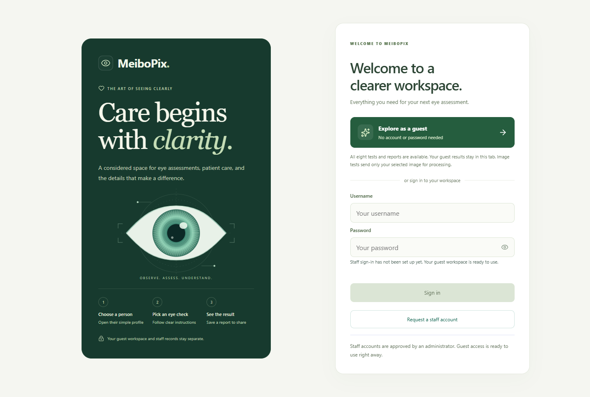

01FEATURED PROJECT LIVE
COMPUTER VISION / MEDICAL IMAGING
MeiboPix.
A clearer view through intelligent imaging.
A deep learning workflow for eyelid and meibomian gland segmentation. Bringing image processing and visual analysis together in an accessible application.
